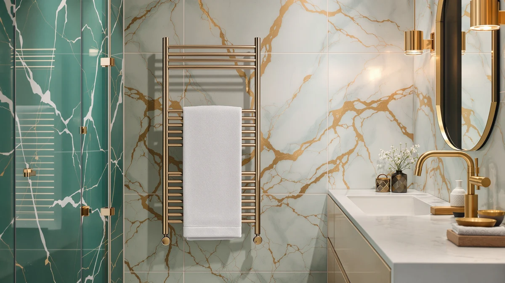

Colliford Towel Warmer Stainless Review (2026): Worth It?
Prices and picks verified as of September 2026. Independent, reader-supported reviews.


Quick Answer
The Colliford Towel Warmer Stainless Steel is a 10-bar, wall-mounted rack built from stainless steel with a touchscreen that adjusts heat between 115°F and 155°F and carries an IPX4 waterproof rating. Among the $119.99 towel warmers in this comparison, it stands out for offering both hardwired and plug-in installation plus full digital control over temperature and running time, rather than a single fixed setting.
Our pick: Colliford Towel Warmer Stainless Steel — $119.99 Check Price on Amazon
Bottom line: our top pick is the Colliford Towel Warmer at $119.99.
Things to Know Before You Buy
- The Colliford towel warmer heats through a stainless steel frame with 10 bars, more than most single-rack designs, and reaches a top setting of 155°F on its touchscreen.
- It carries an IPX4 waterproof rating, which the maker points to as the reason it can sit through steamy bathroom air without risking the touch controls.
- You can install it hardwired into a wall circuit or run it off a standard outlet, a flexibility not every wall-mounted warmer in this price range offers.
- At $119.99, it lands in the same price tier as the Chomolhari Rack 6, the ForPro Premium Hot cabinet, and the Comfier bucket warmer we compare it against below.
- None of the four towel warmers in this colliford towel warmer stainless review carry a published rating or review count on Amazon, so specs and pricing carry more weight than star ratings here.
If you found this colliford towel warmer stainless review while comparing wall-mounted towel warmers under $150, the Colliford Towel Warmer Stainless Steel is worth a close look for its touchscreen temperature control and 10-bar layout.
At $119.99, it costs the same as the three alternatives we compare it against here: the Chomolhari Rack 6, the ForPro Premium Hot cabinet, and the Comfier bucket warmer. That makes installation style and control the real deciding factors rather than price. The short version: if you want a permanent wall fixture with full digital control over both heat and running time, the Colliford's touchscreen and 10-bar frame make it the strongest option in this group. If you would rather have a countertop bucket that heats in minutes, the Comfier or ForPro units below fit that need better.
Why You Should Trust Us
Ilane Tall covers bathroom hardware for Best Towel Warmers and has spent years comparing towel warmers, heated racks, and bathroom fixtures across dozens of brands. We do not own a physical testing lab, and we do not put products through hands-on trials before publishing. Instead, we research each unit by comparing manufacturer specifications, current pricing, safety details, and the verified owner reviews available on Amazon and other retailers, then weigh those details against the closest competitors in its category. This colliford towel warmer stainless review reflects that research process, not a personal trial period with the product, and we say so plainly instead of implying a hands-on test that never happened.
Our Research Experience
We did not run this colliford towel warmer stainless review off a personal trial with the unit. What we did was pull Colliford's stated specs, the 10-bar layout, stainless steel frame, IPX4 waterproof rating, and the 115°F to 155°F touchscreen range, and set them against the three closest competitors selling at the same $119.99 price point. We compared installation options, since the Colliford supports both hardwired and plug-in setups while some rivals only offer one, and we checked how each brand describes its heat-up time and capacity. Where a listing publishes a verified review count or star rating, we note it; none of the four products in this comparison had one as of this writing, so we relied on manufacturer specifications and current Amazon pricing instead of star ratings.
We also read through each brand's own feature claims, since that marketing copy is often the most detailed spec sheet available for towel warmers at this price tier. Where those claims could be checked against a competing brand's numbers, such as heating range or capacity, we made that comparison directly rather than repeating each company's language without context.
Overview & Specs

Colliford Towel Warmer Stainless Steel
What we like
- 10-bar stainless steel frame holds more towels at once than compact 4- or 5-bar racks
- Touchscreen adjusts heat from 115°F to 155°F instead of a single fixed setting
- IPX4 waterproof rating suited to steamy bathroom conditions
- Works hardwired into a wall circuit or plugged into a standard outlet
Flaws but not dealbreakers
- No published owner rating or review count on Amazon as of this review
- Touchscreen controls trade the tactile feedback of physical dials, which some buyers prefer on a bathroom fixture
- Wall mounting takes more setup than a countertop bucket warmer like the Comfier below
| Material | Stainless steel |
| Size | Extended model |
The Colliford Towel Warmer Stainless Steel is built around a 10-bar stainless steel frame designed to mount to a bathroom wall, with a built-in thermostat that Colliford says keeps the heating steady rather than cycling on and off. The touchscreen panel lets you set the temperature anywhere from 115°F to 155°F and choose a heating window between 1 and 9 hours, a wider range of control than the fixed heat-up times on the ForPro and Comfier units we compare it against.
Colliford also built in an IPX4 waterproof rating, aimed at the humid, splash-prone conditions of a working bathroom, and gives you a choice between hardwired installation into an existing circuit or a standard plug-in setup. That flexibility matters if you are renovating and want a permanent fixture wired in, or if you would rather avoid an electrician and just plug it into a nearby outlet.
What We Liked
The strongest case in this colliford towel warmer stainless review comes down to control. Where the ForPro cabinet and most compact wall racks offer a single fixed heat-up window, Colliford's touchscreen lets you dial in a specific temperature between 115°F and 155°F and set a heating duration from 1 to 9 hours. That range suits a household where one person wants a quick warm-up before a shower and another wants the rack running for most of the evening.
The 10-bar layout matters just as much. Most wall-mounted warmers in this price range top out at 4 to 6 bars, enough for a bath towel and maybe a hand towel. Ten bars means you can hang a full-size towel, a robe, and a couple of washcloths at the same time without doubling up on a single bar, which matters in a household of more than one person.
The IPX4 waterproof rating and the choice between hardwired or plug-in installation add to the case for it. A bathroom is one of the more demanding environments for anything electrical, so a stated waterproof rating gives you more to go on than a rack that simply claims to be bathroom safe without specifying a standard. Because it supports both wiring methods, it fits a first-time installation as easily as a swap-in replacement for an existing plug-in unit.
What Could Be Better
The biggest gap in this colliford towel warmer stainless review is the lack of any published rating or review count on Amazon, which is true of all four products compared here but still worth pointing out. A touchscreen panel and a stated IPX4 rating are useful data points, but without a base of verified owner reviews, you are relying more on the manufacturer's own claims than on real-world reports of how the control panel or waterproofing holds up after months of daily use in a humid bathroom.
Touch controls are also a tradeoff worth weighing. A capacitive touchscreen wipes clean easily, but it lacks the tactile feedback of a physical dial or button, and buyers who prefer adjusting a setting without looking, especially with wet hands right out of a shower, may find a simpler analog control more practical day to day.
Installation is the last factor. Because the Colliford is a wall-mounted fixture rather than a countertop bucket, hanging it correctly, whether hardwired or plugged in, takes more setup than the Comfier bucket warmer below, which you can simply set on a counter and plug in.
Who Is It For?
The Colliford Towel Warmer Stainless Steel fits someone who wants a permanent wall fixture with real control over both temperature and running time, rather than a warmer that just turns on and stays on. If you are renovating a bathroom and want a rack that can be wired directly into a circuit, or you simply want the option to plug it into a standard outlet instead, the 10-bar frame and touchscreen make it a strong fit for a primary household bathroom.
It is a weaker match if you want the fastest possible warm-up for a single towel, want to avoid wall mounting altogether, or want a large-capacity bucket at a similar price. In those cases, the Comfier or ForPro units covered below, both bucket-style warmers you set on a counter, fit that need with less installation involved.
Alternatives to Consider
If wall mounting or the touchscreen learning curve is not what you want from a towel warmer, these three alternatives cover a bucket-style setup, a spa cabinet, and a different wall-mounted layout, all priced at the same $119.99 as the Colliford.

Editor’s Pick
Chomolhari Tower Warmer Rack 6
This 6-bar stainless steel rack also carries an IPX4 waterproof rating and heats between 115°F and 155°F, giving it nearly the same control range as the Colliford in a smaller frame, at the same $119.99 price.
$119.99
Check Price on Amazon
Best Value
ForPro Professional Collection Premium Hot
A cabinet-style warmer rather than a wall rack, this ForPro unit heats to 158°F to 176°F in about 30 minutes and holds up to 24 facial-sized towels, making it a better fit for a spa-style setup than a single wall-mounted fixture.
$119.99
Check Price on Amazon
Premium Choice
Comfier Hot Towel Warmers for
This 20-liter bucket warmer heats in as little as one minute and reaches full warmth within 10 minutes, with a flip-top lid and one-touch controls that skip the touchscreen learning curve entirely, though it holds only two large towels at a time.
$119.99
Check Price on AmazonFrequently Asked Questions
Is the Colliford Towel Warmer Stainless Steel worth the extra installation effort over a bucket warmer?
Only if you want a permanent wall fixture with adjustable heat and running time. Based on the specs we compared, the Comfier bucket warmer heats faster with far less setup, so it is the better fit if you would rather skip wall mounting or wiring altogether.
How long does the Colliford towel warmer take to heat up?
Colliford does not publish a fixed heat-up time. Instead, the touchscreen lets you set a heating duration between 1 and 9 hours and a temperature between 115°F and 155°F, so warm-up speed depends on the setting you choose rather than one fixed window.
Can the Colliford towel warmer be installed without an electrician?
Yes. It supports a standard plug-in setup in addition to hardwired installation, so you can run it as a plug-in unit without hiring an electrician and switch to hardwired later if you want a more permanent setup.
Final Verdict
This colliford towel warmer stainless review comes down to a straightforward tradeoff: at $119.99, the Colliford Towel Warmer Stainless Steel buys you a 10-bar stainless steel frame with touchscreen control over both temperature and running time, plus the flexibility to wire it in or plug it in. If that level of control and a permanent wall installation matter more to you than a fast, no-setup bucket warmer, Colliford is the strongest pick among the four towel warmers compared here. If you would rather skip wall mounting entirely, the Comfier bucket warmer or the ForPro cabinet give you a simpler setup for the same price.